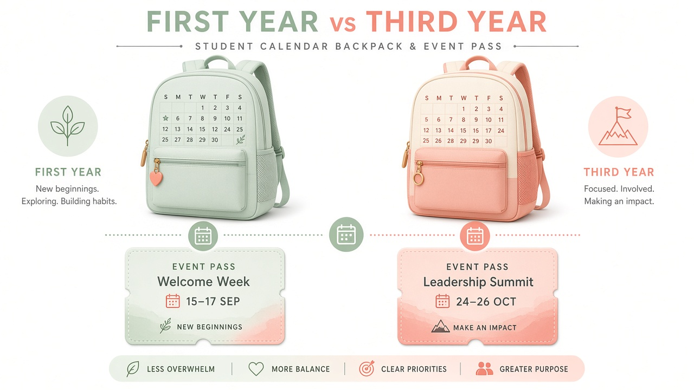

Карьера · Курсы
Первый vs третий курс: когда идти в event-агентство

«Идите в агентство с первого курса» и «не мешайте учёбе до третьего» — два популярных совета, и оба бывают правы. Разница не в морали, а в ресурсе: базовые дисциплины, сессии, общежитие, подработка. Eventerra в Минске берёт и младших, и старших курсов, но ставит разные задачи — и ждёт разной автономности.
Первый курс: зачем идти и какие риски
Плюсы раннего входа: вы быстро понимаете, «ваше / не ваше», набираете язык площадки, легче переносите простые исполнительские роли. Минусы: адаптация к вузу ещё идёт, расписание прыгает, навык письменных работ только складывается.
- Подходит, если есть запас по учёбе, поддержка семьи/времени, готовность к ролям «руки на площадке».
- Рановато, если уже горят хвосты, сложный переезд в Минск, нет навыка говорить о перегрузе.
На первом курсе ценность агентства — не должность, а наблюдательная практика: как выглядит call time, кто за что отвечает, почему чек-лист важнее «креативного хаоса».
Третий курс: другое окно возможностей
К третьему курсу обычно понятнее профиль (маркетинг, PR, менеджмент), ближе курсовые с прикладной темой и практика «для галочки или для роста». Вы можете претендовать на более смысловые задачи: координация куска зоны, сбор обратной связи, помощь в подготовке материалов, черновики коммуникаций.
- Вы уже можете связать теорию курса с полем.
- Легче договориться с кафедрой о базе практики.
- Выше ожидания по ответственности — и выше цена ошибки.
- Параллельно может давить мысль о дипломе: лучше сразу копить кейс.
Матрица «когда входить»
| Сигнал | Скорее 1–2 курс | Скорее 3–4 курс |
|---|---|---|
| Цель | Профориентация | Портфолио и практика «в зачёт» |
| Учёба | Стабильная | Любая, но с жёстким календарём |
| Роль | Исполнение + обучение | Кусок ответственности |
| Риск | Перегруз адаптации | Конфликт с дипломными дедлайнами |
Как войти без самообмана
Напишите агентству честно: курс, вуз, расписание, сколько часов в месяц реально, что уже делали (волонтёрство, студсовет, SMM вузовских мероприятий). В Eventerra лучше взять человека с ясными границами, чем энтузиаста на две недели.
Компромиссный путь: лёгкий вход на 1–2 курсе (несколько событий в семестр) → более плотная практика на 3-м. Так вы не теряете учёбу и не приходите на старшие курсы «с нуля».
Первый курс — про проверку интереса. Третий — про сбор доказательств навыка. Оба валидны, если календарь честный. Хуже всего — обещать агентству полный месяц и исчезать на сессии без предупреждения.
Не уверены, ваш ли сейчас момент? Опишите курс и окна в заявке Eventerra: форма контактов.